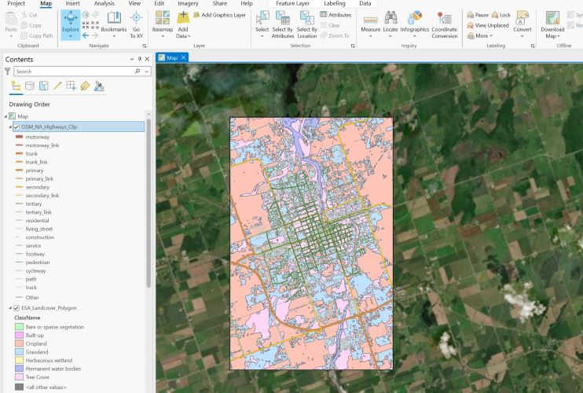
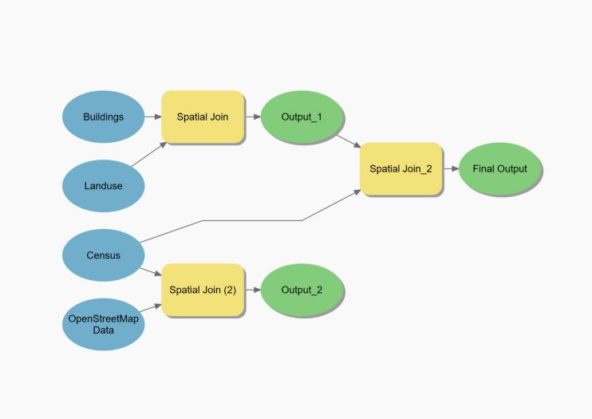

Spatial analysis is a process of geoinformation system data acquisition, analysis and interpretation. Spatial analysis is an important skill for many fields and applications, such as geography, urban planning, environmental science, public health, business, and education. Our team provides professional solutions to tackle spatial problems.
By using ArcGIS, we can create detailed and accurate maps of landuse and land cover that can help clients make informed decisions about resource management, urban planning, environmental conservation, and more. In the real world, people utilize spatial analysis to support decision making process. Flooding prediction and prevention is an example. We can use spatial analysis to predict the flooding area when there will be particular rainfall. Elevation data, landuse data, water feature data, population density data etc. can be imported to ArcGIS and it can analyze the flooding prediction. It helps the government to make decisions for designing drainage system. Besides, it also helps government to conduct risk assessment when there is a heavy storm. It supports decision marking processes.
ArcGIS geoprocessing models are a powerful tool for automating workflows and analyzing spatial data. Geoprocessing models can automate repetitive tasks and explore alternative outcomes with different datasets and tool parameters.